Damper tuning & analysis
CR26I's rear axle was oscillating at the car's natural frequency. The solution was to retune the damper setup to settle the car.
ResultLateral-g oscillation amplitude cut by 56%.
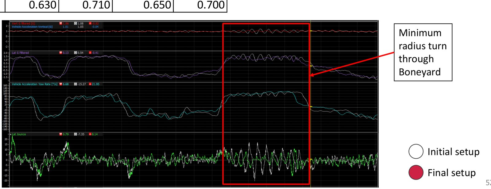
Kinematics packages and vehicle setup for two Crimson Racing FSAE competition cars.
CR26I's rear axle was oscillating at the car's natural frequency. The solution was to retune the damper setup to settle the car.
ResultLateral-g oscillation amplitude cut by 56%.

Designed the suspension geometry package and set performance targets for adjustments across the full travel range. Measured deviations with a FARO arm to check against design, and implemented tolerance standards for how far the built suspension can deviate.
ResultMotion ratios within 1.3% of design.
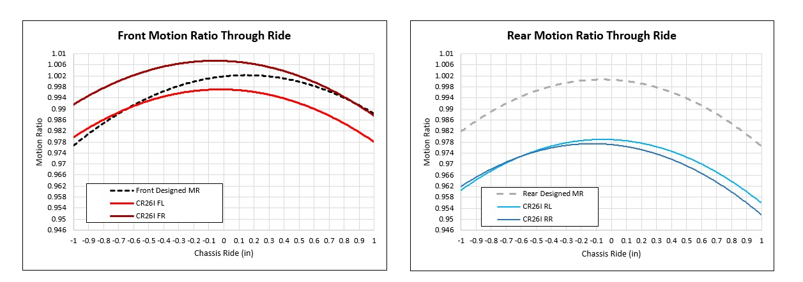
Unadjustable, risking drivability
Unadjustable, driveable
Adjustable through setup
Every pickup point was ranked by kinematic effect and adjustability. All measured deviations fell within Tier 2 or Tier 3.
Redesigned the suspension bumpstops from SBR rubber to a 3D-printed TPU part and tested 54 samples. This was the initial solution for the rear axle oscillations.
ResultManufacturing deviation cut by 83%, from 192.7 to 32.5 lbf/in.
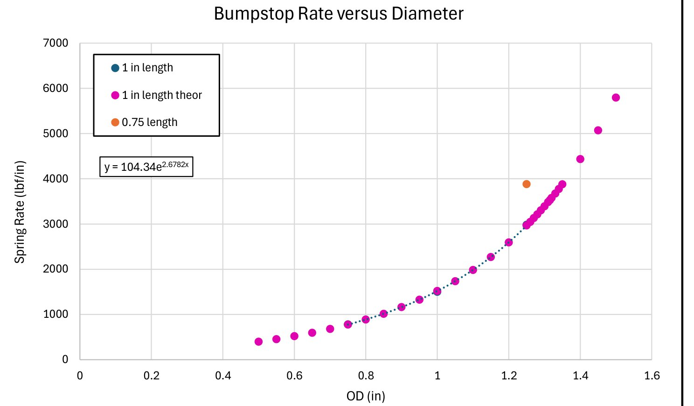
Co-designed and deployed standardized driver feedback and testing sheets using the Cooper-Harper scale.
ResultDriver feedback and track data used together to validate setup choices.
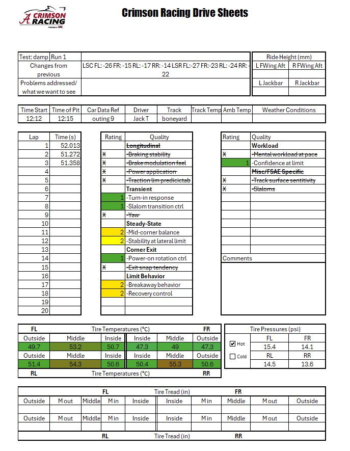
Scored six Hoosier options (R20 and LC0 compounds in 16×6, 16×7.5, and 18×6) in a weighted decision matrix across seven criteria: mass, yaw moment of inertia, cornering stiffness, peak lateral and longitudinal force, rotational inertia, and load sensitivity. The inputs came from Pacejka tire model.
ResultHoosier R20 16×7.5-10 chosen with the top weighted score (94.3 vs. 85.8 for the next best), cutting tire selection time by an estimated 50%.
The suspension is built to be tuned at the track without new parts:
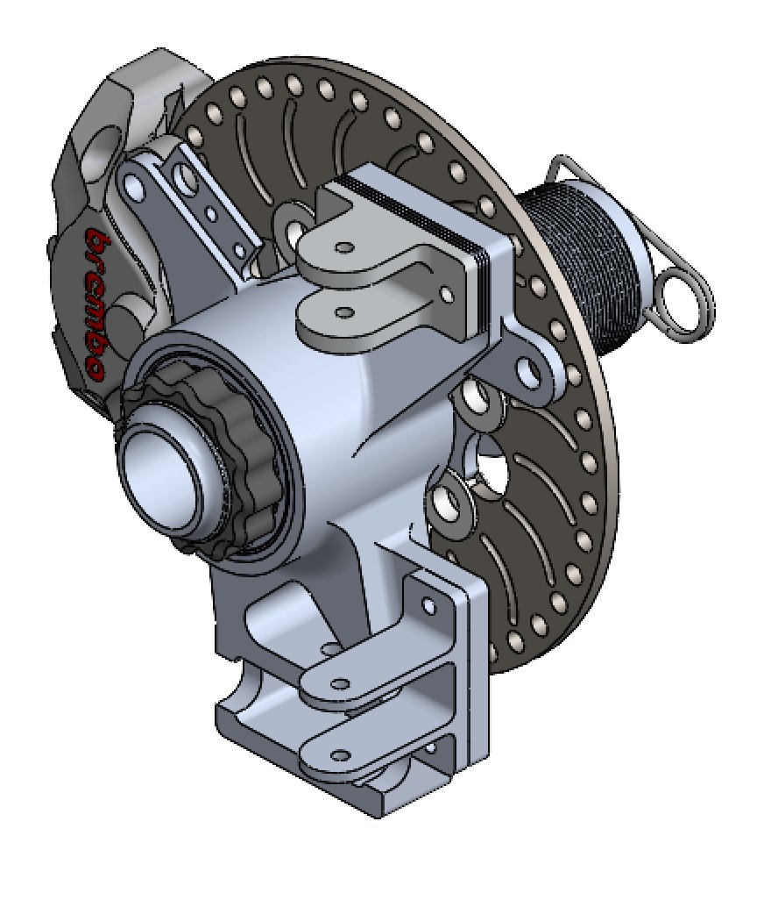
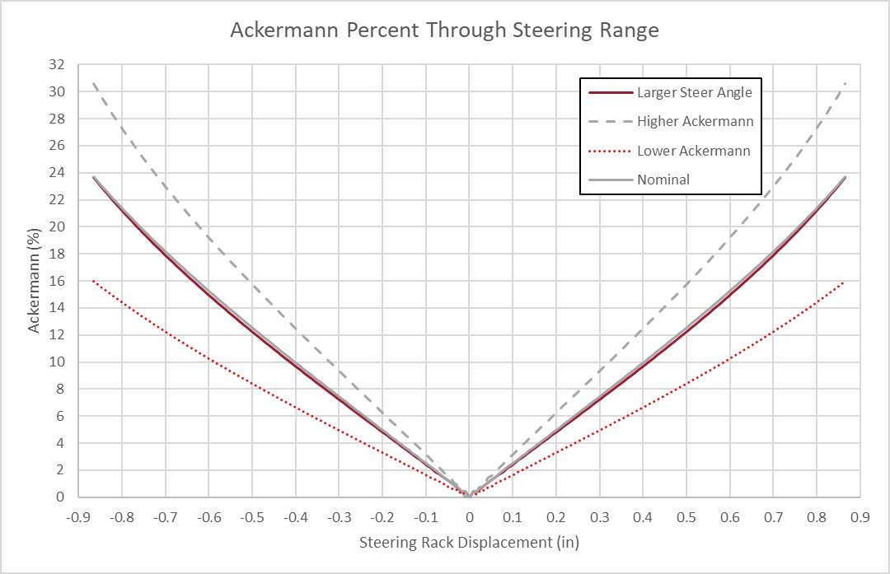
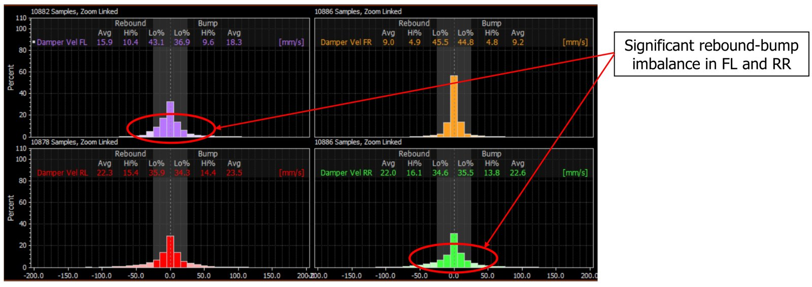
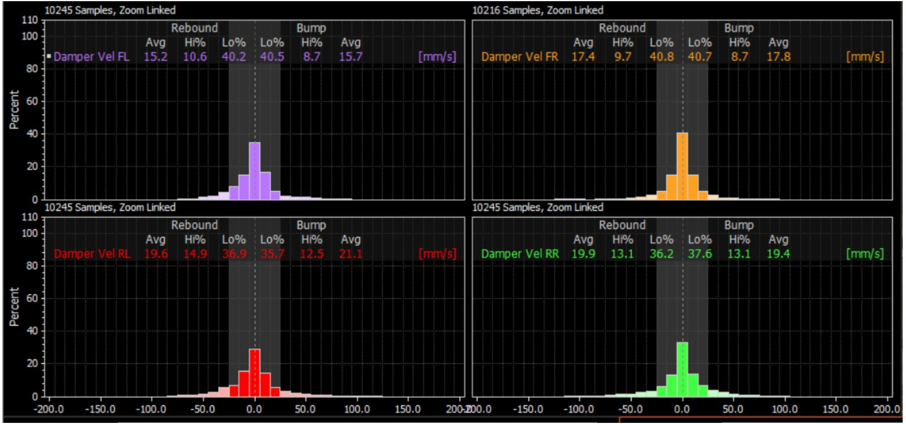
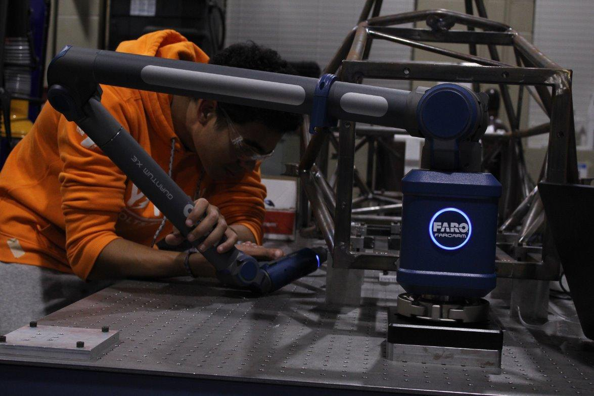
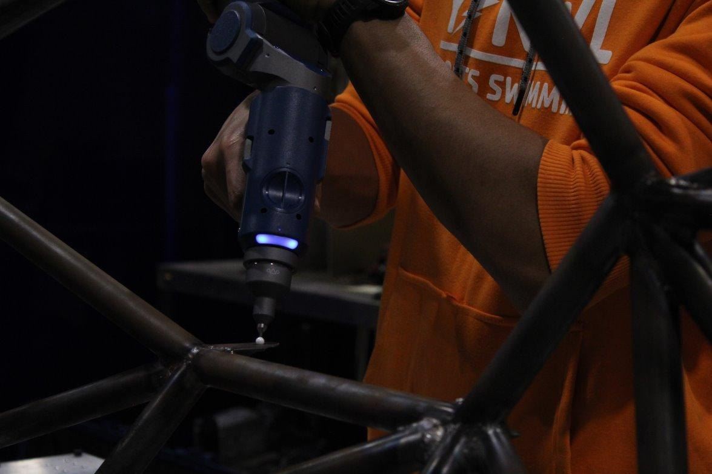
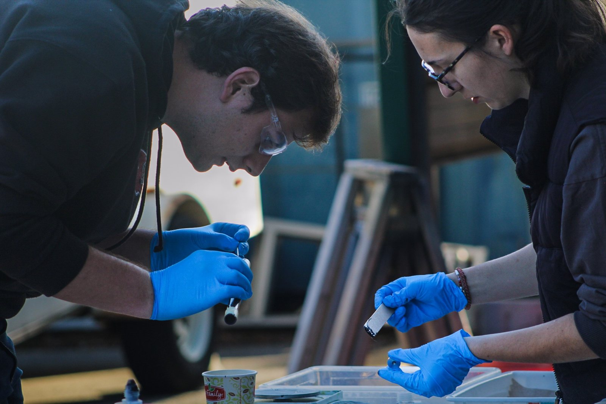